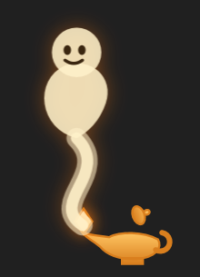

مصباح: معلّم بيعيش على شاشتك
اسأله بصوتك عن أي حاجة في أي برنامج أو موقع. بيشرحلك بالمصري، ويشاورلك على المكان، ولو قلتله «اعملهالي» يعملها بدالك.
نزّل لـ Windowsمجاني: 25 سؤال و 5 مهام في الشهر. Windows 10 و 11.
إزاي بتستخدمه
Right Ctrlدوس وخليك دايس واسأل بصوتك، وسيبه لما تخلص.
Right Ctrl + mouseوإنت دايس، ارسم بالماوس حوالين أي حاجة واسأل «ده إيه؟».
«اعملهالي»يعمل فولدر، يكتب ملف، يرتّب صورك، يدوّر على النت. ولو حاجة ممكن تبوّظ بيسألك الأول.
Right Ctrl ×2مش عايز تتكلم؟ دوس مرتين واكتب.
التسطيب
- نزّل الملف وافتحه.
- لو Windows قال «Windows protected your PC»: دوس More info وبعدين Run anyway. ده بيظهر لأي برنامج جديد لسه ما اتوقّعش رقمياً.
- سجّل بإيميلك، والمصباح هيعلّمك كل حاجة خطوة خطوة.
بيحدّث نفسه لوحده. بيشوف الشاشة بس لما تسأله، والتسجيل بيحصل بس وإنت دايس على الزرار.